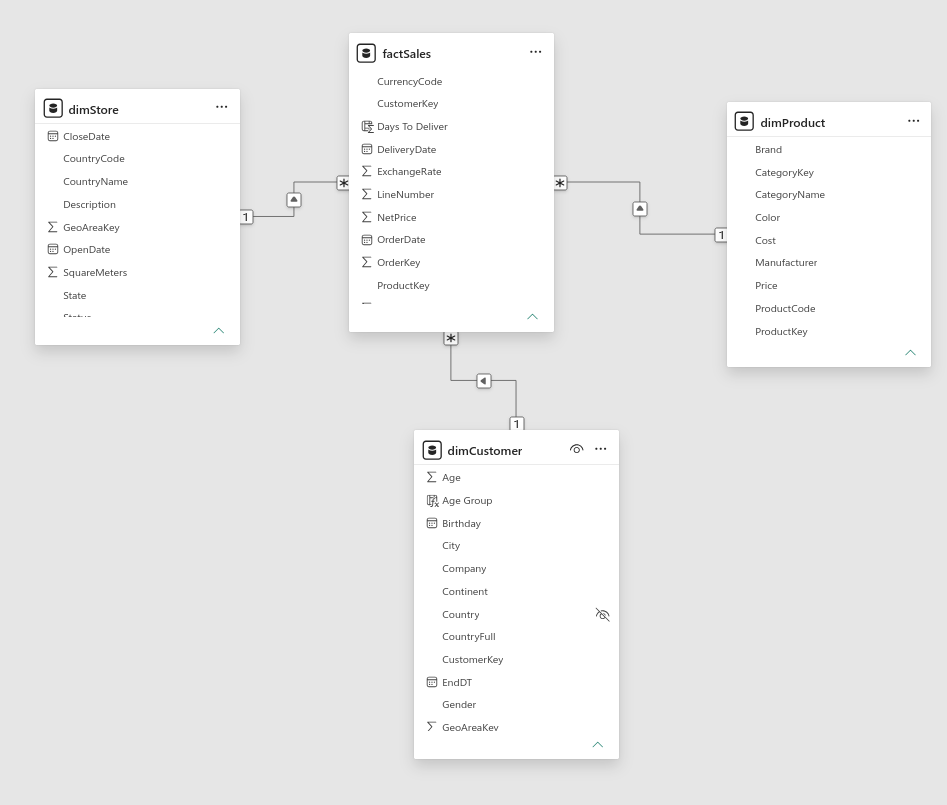
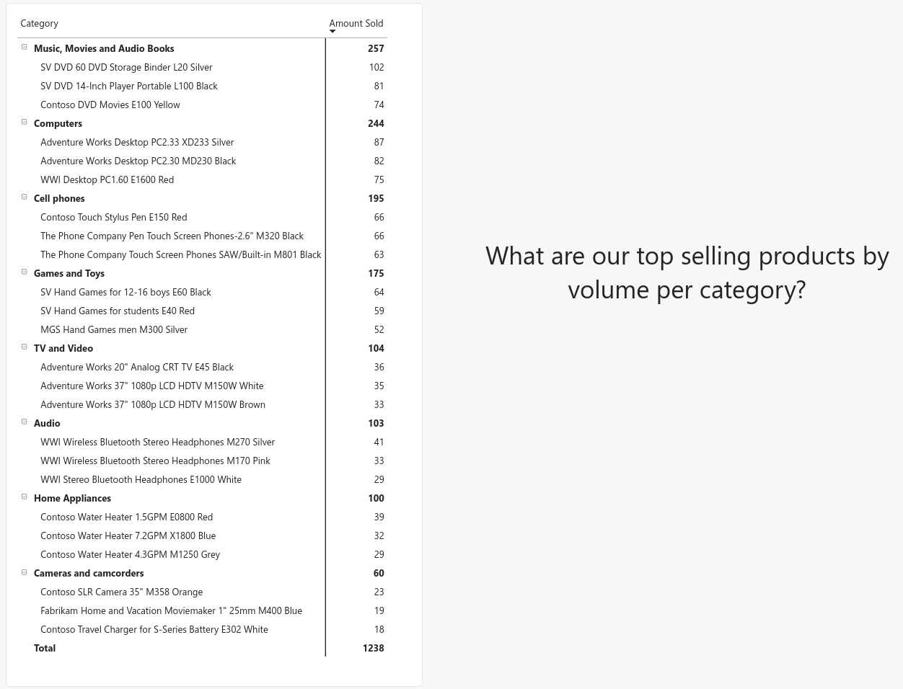
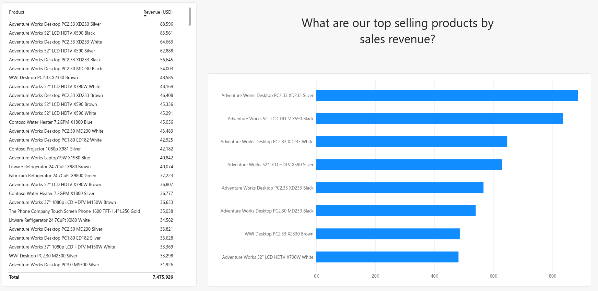
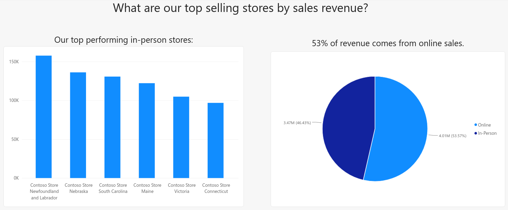
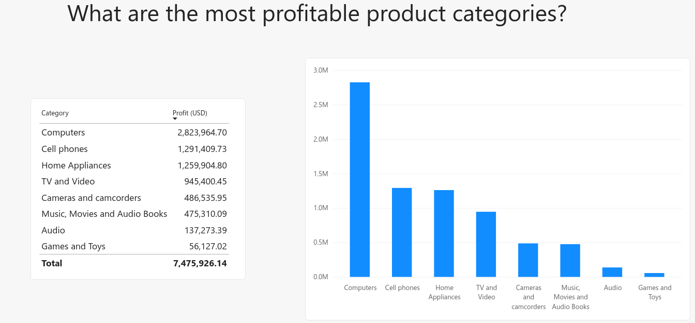
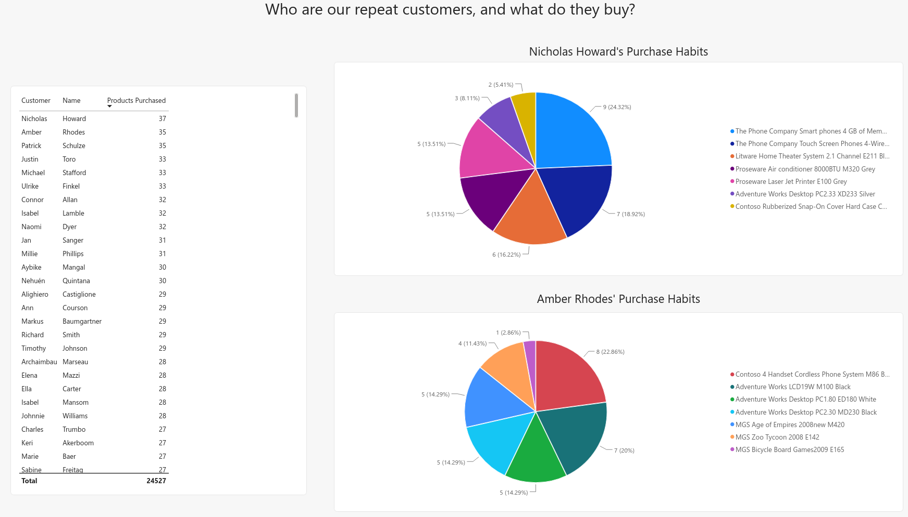
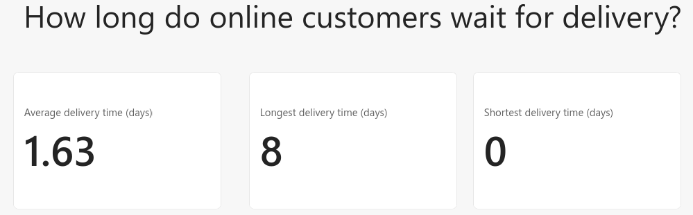
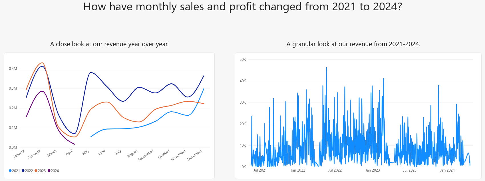
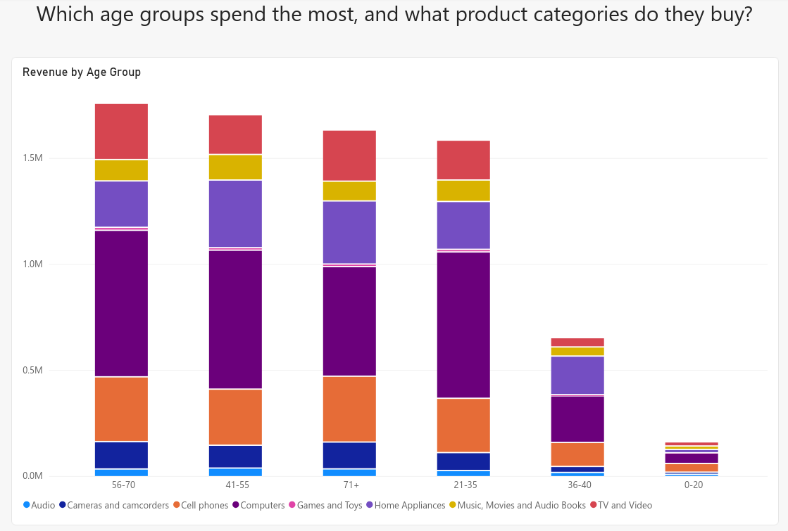
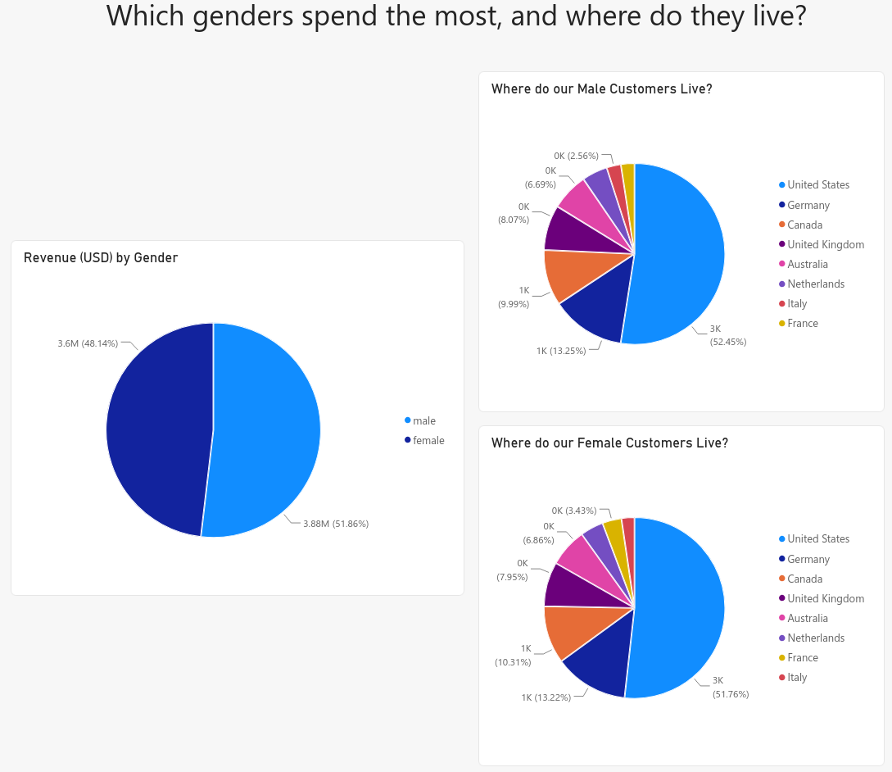

My Power BI Work
Star Schema
A star schema is how multiple datasets connect. The datasets serve different purposes: dimProduct tracks product information, dimCustomer holds customer information, dimStore has information about the stores selling the products, and factSales holds the information about the sales that have been made. Despite their differences, they all contain a ProductKey variable that is identical across datasets, and can be used to connect the data. When multiple datasets are connected like this, their connections form the shape of a star, hence the name star schema.

What are our top selling products by volume per category?

What are our top selling products by sales revenue?

What are our top selling stores by sales revenue?

What are the most profitable product categories?

Who are our repeat customers, and what do they buy?

How long do online customers wait for delivery?

How have monthly sales and profit changed from 2021 to 2024?

Which age groups spend the most, and what product categories do they buy?

Which genders spend the most, and where do they live?
